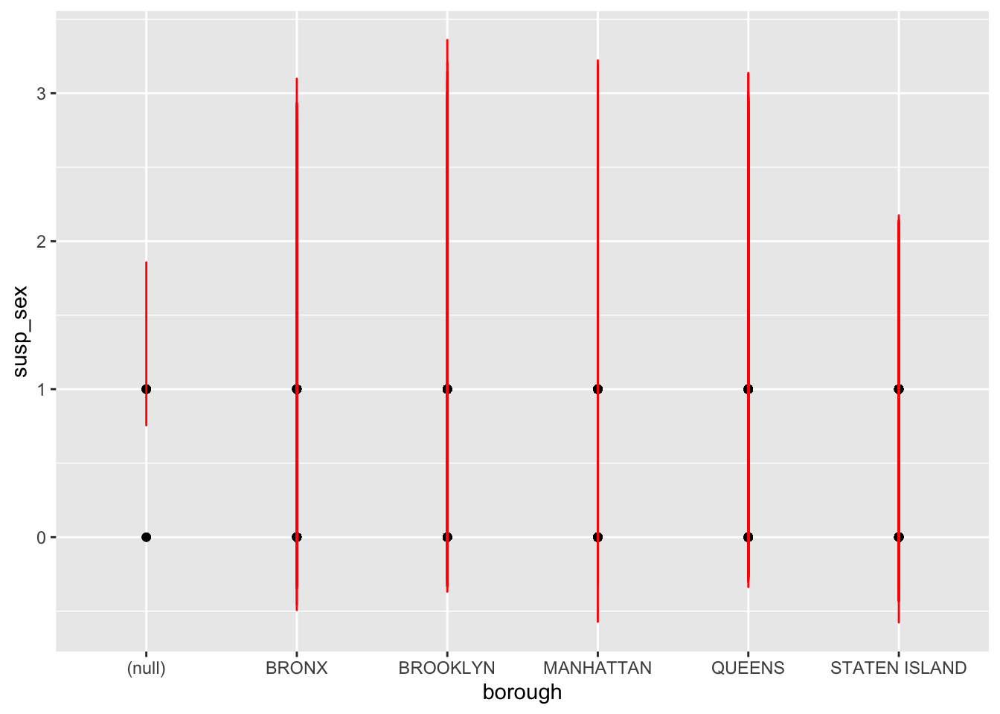
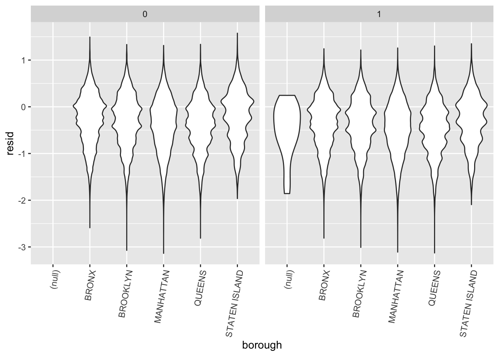
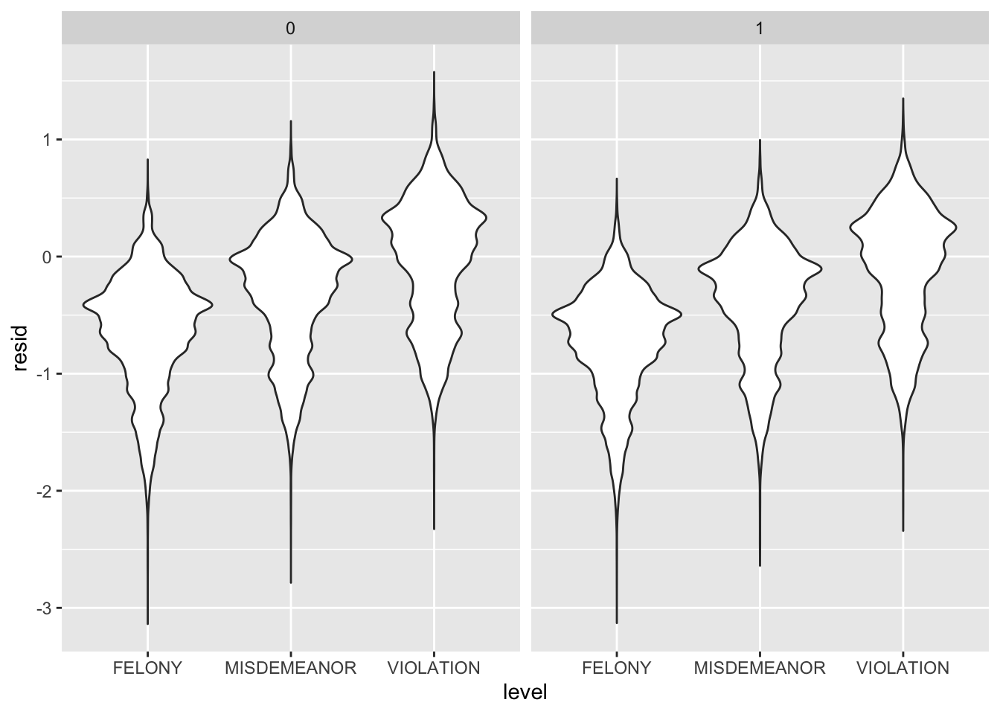
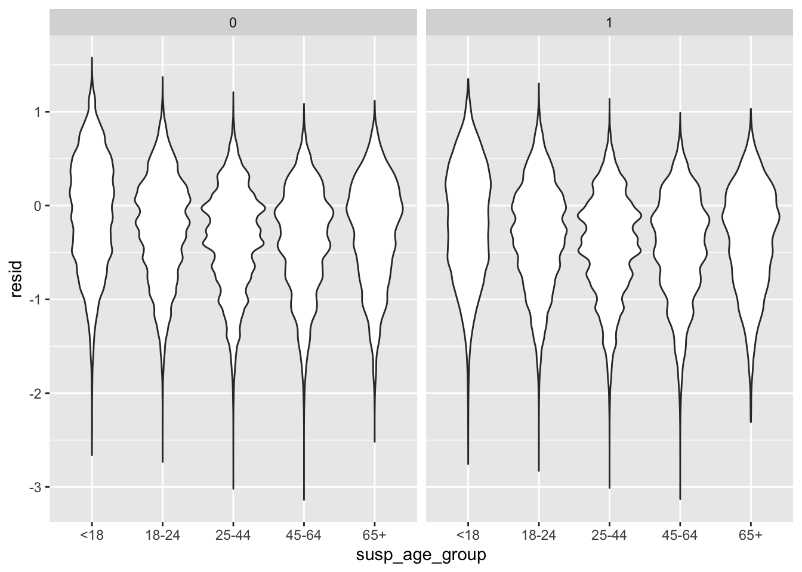
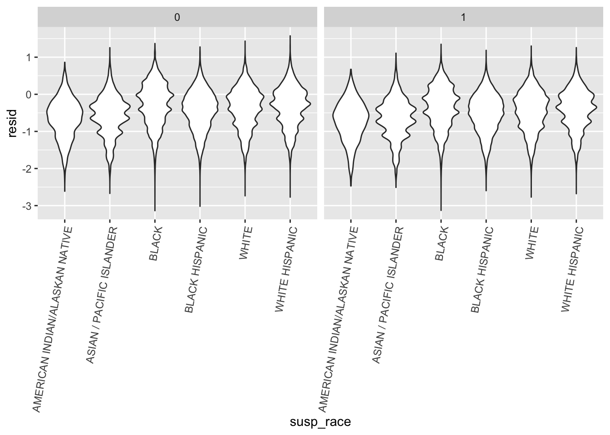
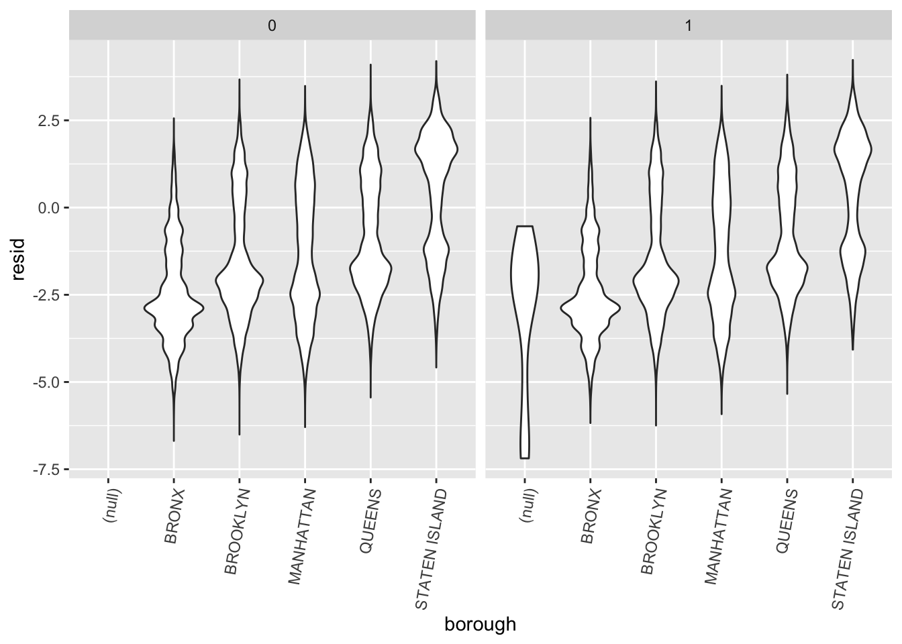
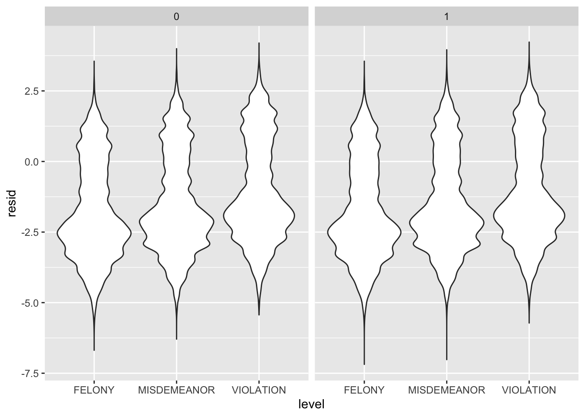
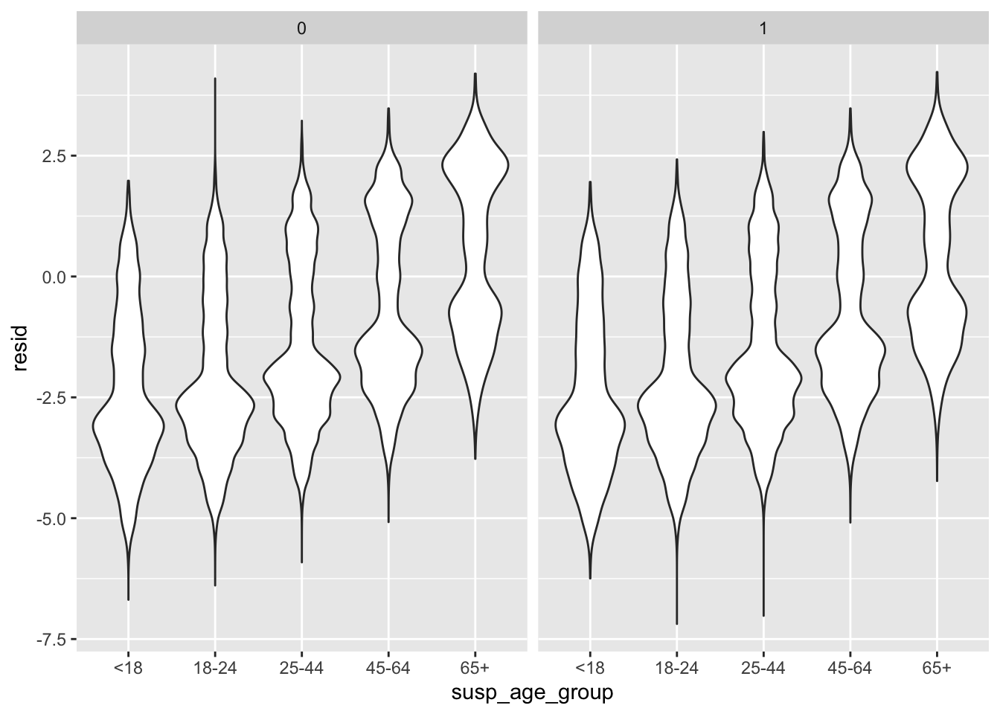

library(tidyverse)## ── Attaching packages ─────────────────────────────────────── tidyverse 1.3.2 ──
## ✔ ggplot2 3.3.6 ✔ purrr 0.3.4
## ✔ tibble 3.1.8 ✔ dplyr 1.0.10
## ✔ tidyr 1.2.0 ✔ stringr 1.4.1
## ✔ readr 2.1.2 ✔ forcats 0.5.2
## ── Conflicts ────────────────────────────────────────── tidyverse_conflicts() ──
## ✖ dplyr::filter() masks stats::filter()
## ✖ dplyr::lag() masks stats::lag()library(purrr)
library(modelr)
library(dbplyr)##
## 载入程辑包：'dbplyr'
##
## The following objects are masked from 'package:dplyr':
##
## ident, sqllibrary(plyr)## ------------------------------------------------------------------------------
## You have loaded plyr after dplyr - this is likely to cause problems.
## If you need functions from both plyr and dplyr, please load plyr first, then dplyr:
## library(plyr); library(dplyr)
## ------------------------------------------------------------------------------
##
## 载入程辑包：'plyr'
##
## The following objects are masked from 'package:dplyr':
##
## arrange, count, desc, failwith, id, mutate, rename, summarise,
## summarize
##
## The following object is masked from 'package:purrr':
##
## compactsetwd(dir="./Data_preprocessing/data")
a <- list.files()
a ## [1] "cleaned_NYPD_2016.csv" "cleaned_NYPD_2017.csv" "cleaned_NYPD_2018.csv"
## [4] "cleaned_NYPD_2019.csv" "cleaned_NYPD_2020.csv" "cleaned_NYPD_2021.csv"
## [7] "cleaned_NYPD_2022.csv"dir <- paste("./",a,sep="")
n <- length(dir)
merge_data <- read.csv(file = dir[1],header=T,sep=",")
merge_data <- cbind(dir[1], merge_data )
merge_data <- rename(merge_data, c("dir[1]"="yyyymm"))
for (i in 2:7){
new.data <- read.csv(file = dir[i], header=T, sep=",")
new.data <- cbind(dir[i], new.data)
new.data <- rename(new.data, c("dir[i]"="yyyymm"))
merge_data <- rbind(merge_data,new.data)
}# filter data with unknown
tidydata1=merge_data%>%
na.omit()%>%
filter(!susp_sex=="U")%>%
filter(!susp_race=="UNKNOWN")%>%
filter(!susp_age_group=="UNKNOWN")%>%
filter(!vic_race=="UNKNOWN")%>%
filter(!vic_age_group=="UNKNOWN")%>%
separate(date,into=c("mon","day","year"),sep="/")%>%
mutate(jurisdiction_code=as.numeric(jurisdiction_code))%>%
mutate(susp_sex=ifelse(susp_sex=="M",1,0),vic_sex=ifelse(vic_sex=="M",1,0),jurisdiction_code=ifelse(jurisdiction_code>=3,3,jurisdiction_code+0))%>%
mutate(jurisdiction_code=as.factor(jurisdiction_code))%>%
mutate(covid_state=ifelse(year>=2020,1,0))
# when year >=2020, we assume the world is in a covid state.mylogit <- glm(susp_sex ~ precinct
+ borough + jurisdiction_code+atpt_cptd
+level+susp_age_group
+susp_race+vic_age_group+vic_race+vic_sex+covid_state, data = tidydata1, family = "binomial")
# almost full model except victor information
mylogit%>%
broom::tidy() %>%
select(term, estimate, p.value)## # A tibble: 33 × 3
## term estimate p.value
## <chr> <dbl> <dbl>
## 1 (Intercept) 1.53 8.02e- 3
## 2 precinct -0.00347 4.29e- 22
## 3 boroughBRONX 0.468 4.13e- 1
## 4 boroughBROOKLYN 0.620 2.79e- 1
## 5 boroughMANHATTAN 0.459 4.23e- 1
## 6 boroughQUEENS 0.743 1.94e- 1
## 7 boroughSTATEN ISLAND 0.628 2.73e- 1
## 8 jurisdiction_code1 0.678 6.07e-206
## 9 jurisdiction_code2 -0.153 1.73e- 86
## 10 jurisdiction_code3 -0.0470 1.35e- 1
## # … with 23 more rowsFor backward stepwise, in order to select variables.
step(mylogit, direction='backward')## Start: AIC=986315.5
## susp_sex ~ precinct + borough + jurisdiction_code + atpt_cptd +
## level + susp_age_group + susp_race + vic_age_group + vic_race +
## vic_sex + covid_state
##
## Df Deviance AIC
## <none> 986249 986315
## - precinct 1 986343 986407
## - atpt_cptd 1 986402 986466
## - covid_state 1 986506 986570
## - borough 5 986589 986645
## - susp_race 5 986947 987003
## - jurisdiction_code 3 987798 987858
## - vic_age_group 4 987952 988010
## - susp_age_group 4 987986 988044
## - vic_sex 1 988688 988752
## - vic_race 5 992110 992166
## - level 2 998154 998216##
## Call: glm(formula = susp_sex ~ precinct + borough + jurisdiction_code +
## atpt_cptd + level + susp_age_group + susp_race + vic_age_group +
## vic_race + vic_sex + covid_state, family = "binomial", data = tidydata1)
##
## Coefficients:
## (Intercept) precinct
## 1.525072 -0.003474
## boroughBRONX boroughBROOKLYN
## 0.468241 0.619915
## boroughMANHATTAN boroughQUEENS
## 0.458813 0.743427
## boroughSTATEN ISLAND jurisdiction_code1
## 0.627991 0.677619
## jurisdiction_code2 jurisdiction_code3
## -0.152851 -0.046952
## atpt_cptdCOMPLETED levelMISDEMEANOR
## -0.275581 -0.384118
## levelVIOLATION susp_age_group18-24
## -0.747449 0.059370
## susp_age_group25-44 susp_age_group45-64
## 0.259121 0.355220
## susp_age_group65+ susp_raceASIAN / PACIFIC ISLANDER
## 0.322764 -0.227803
## susp_raceBLACK susp_raceBLACK HISPANIC
## -0.149805 -0.091082
## susp_raceWHITE susp_raceWHITE HISPANIC
## -0.304785 -0.296770
## vic_age_group18-24 vic_age_group25-44
## 0.391673 0.276877
## vic_age_group45-64 vic_age_group65+
## 0.190445 0.005028
## vic_raceASIAN / PACIFIC ISLANDER vic_raceBLACK
## 0.094760 -0.581278
## vic_raceBLACK HISPANIC vic_raceWHITE
## -0.375859 -0.072595
## vic_raceWHITE HISPANIC vic_sex
## -0.181335 -0.258387
## covid_state
## 0.081495
##
## Degrees of Freedom: 891833 Total (i.e. Null); 891801 Residual
## Null Deviance: 1015000
## Residual Deviance: 986200 AIC: 986300Through backward, we found that we need all the variables.(lasso?)
# 此图不要
tidydata1 %>%
add_predictions(mylogit) %>%
ggplot(aes(x = borough, y = susp_sex)) + geom_point() +
geom_line(aes(y = pred), color = "red")
tidydata1 %>%
modelr::add_residuals(mylogit) %>%
ggplot(aes(x = borough, y = resid)) + geom_violin()+
facet_wrap(~covid_state)+theme(axis.text.x = element_text(angle = 80, hjust = 1))
tidydata1 %>%
modelr::add_residuals(mylogit) %>%
ggplot(aes(x = level, y = resid)) + geom_violin()+facet_wrap(~covid_state)
tidydata1 %>%
modelr::add_residuals(mylogit) %>%
ggplot(aes(x = susp_age_group, y = resid)) + geom_violin()+facet_wrap(~covid_state)
tidydata1 %>%
modelr::add_residuals(mylogit) %>%
ggplot(aes(x = susp_race, y = resid)) + geom_violin()+
theme(axis.text.x = element_text(angle = 80, hjust = 1))+facet_wrap(~covid_state)
# There are lot of race, we only focus on white and black
tidydata2=tidydata1%>%
filter(susp_race %in% c("BLACK","WHITE"))%>%
mutate(susp_race=ifelse(susp_race=="BLACK",1,0))mylogit_2=glm(susp_race ~ precinct
+ borough + jurisdiction_code+atpt_cptd
+level+susp_age_group
+susp_sex+vic_age_group+vic_race+vic_sex, data = tidydata2, family = "binomial")
# almost full model except victor information
mylogit_2%>%
broom::tidy() %>%
select(term, estimate, p.value)## # A tibble: 28 × 3
## term estimate p.value
## <chr> <dbl> <dbl>
## 1 (Intercept) 3.05 4.29e- 3
## 2 precinct 0.0245 0
## 3 boroughBRONX -0.910 3.94e- 1
## 4 boroughBROOKLYN -2.37 2.65e- 2
## 5 boroughMANHATTAN -0.893 4.03e- 1
## 6 boroughQUEENS -3.54 9.13e- 4
## 7 boroughSTATEN ISLAND -4.42 3.55e- 5
## 8 jurisdiction_code1 1.46 0
## 9 jurisdiction_code2 1.28 0
## 10 jurisdiction_code3 0.629 1.47e-31
## # … with 18 more rowstidydata2 %>%
modelr::add_residuals(mylogit_2) %>%
ggplot(aes(x = borough, y = resid)) + geom_violin()+facet_wrap(~covid_state)+theme(axis.text.x = element_text(angle = 80, hjust = 1))
tidydata2 %>%
modelr::add_residuals(mylogit_2) %>%
ggplot(aes(x = level, y = resid)) + geom_violin()+facet_wrap(~covid_state)
tidydata2 %>%
modelr::add_residuals(mylogit_2) %>%
ggplot(aes(x = susp_age_group, y = resid)) + geom_violin()+facet_wrap(~covid_state)